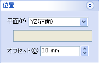
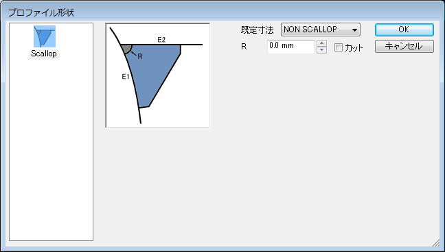
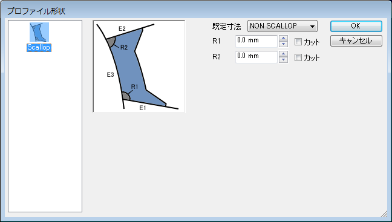
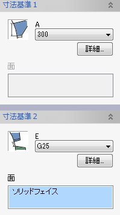
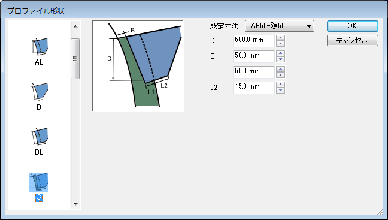
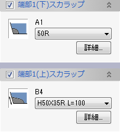
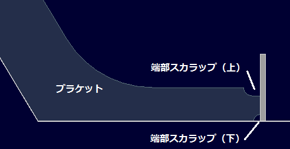

ブラケット
ブラケット
ブラケットを作成します。（２面、３面間に板形状を作成します。）


操作方法
パラメータの入力後、作成形状がプレビュー表示されます。形状の確認後、OKボタンで実行します。
パラメータ
- 位置
ブラケットを作成する平面位置を指定します。(平面入力)
 - 板厚

板逃方向（＋側、−側、両側）、板厚、モールド位置を設定します。
- 形状


- 形状
ブラケットの基本形状、寸法を選択、設定します。(ダイアログの入力方法)
（面１、面２方向の寸法基準は下記の寸法基準１，２のダイアログで設定します。） - スカラップ
ブラケットにスカラップを作成する位置(面1,2間、あるいは面1,3,面2,3間)を設定します。クリックで形状設定ダイアログを表示します。(寸法値の０はスカラップをつけないことを意味します。)
  - 面1,面2,面3
ブラケットを取り付ける面を選択します。３面のブラケットの場合は面３（中央の面）を選択します。反転をチェックするとブラケットの取りつく方向が面の法線方向と反対側になります。
- 形状
- フランジ
チェックすると、ブラケットにフランジ部分をつけます。（フランジをつけることができない形状もあります。）
寸法や形状のタイプを設定します。(ダイアログの入力方法)
「アングル方向反転」をチェックすることでフランジの方向を反対側にすることができます。
「取付角度」は既定の角度(90°)からの角度を指定します。

- 寸法基準1,2
ブラケットの面１、面２方向の寸法基準を設定します。
寸法や形状のタイプを設定します。(ダイアログの入力方法)
形状タイプによっては追加の基準面を指定する必要のあるものがあります。その場合には「面」リストボックスにて基準面を選択します。
  - 端部スカラップ(1,2,上、下)
ブラケットの寸法基準1,2の端部それぞれにスカラップを作成する場合にチェックます。
寸法や形状のタイプを設定します。(ダイアログの入力方法)
 